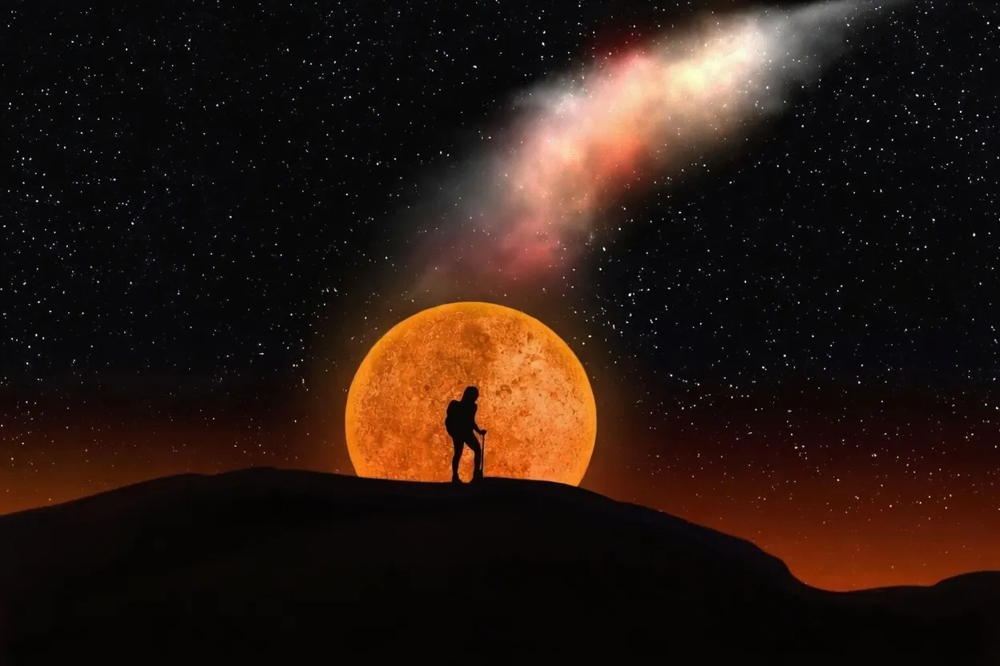

Eclipse of the Century 2026: 6 Minutes of Total Darkness — Mapped Best Viewing Spots


The year 2026 promises to be an extraordinary one for astronomy enthusiasts and anyone fascinated by celestial events. On August 12, 2026, a rare and awe-inspiring spectacle will unfold as the Eclipse of the Century takes place, bringing with it approximately 6 minutes of total darkness. This event is a rare opportunity for people to witness the moon's shadow on Earth, and with the right planning, observers can experience the full majesty of this phenomenon.
The path of totality, where the eclipse will be fully visible, stretches across several countries, offering a unique chance for millions of people to observe this natural wonder. From the United States to parts of Europe, Africa, and Asia, the eclipse's path will cover a significant portion of the globe. As the moon passes between the Earth and the sun, it will block the sun's light, revealing the sun's corona and creating an otherworldly atmosphere. With the help of advanced technology and precise calculations, scientists have mapped out the best viewing spots for this extraordinary event.
Table of Contents
Understanding the Eclipse of the Century
The Eclipse of the Century is a total solar eclipse, which occurs when the moon is at the right distance from Earth to completely cover the sun's disk. This alignment is relatively rare because the moon's orbit is tilted at an angle of about 5 degrees with respect to the Earth's orbit around the sun. As a result, the moon's shadow usually falls above or below the Earth, making total solar eclipses visible from a specific path on the Earth's surface. On August 12, 2026, the moon will be in the perfect position to cast its shadow on a significant portion of the Earth, creating an unforgettable experience for observers.
The duration of the eclipse will vary depending on the location within the path of totality. In some areas, the total eclipse will last for approximately 6 minutes, while in others, it may be shorter. The eclipse's path of totality will cover a wide range of landscapes, from urban centers to natural wonders, providing a diverse array of settings for observers to experience this event.
To make the most of this experience, it is essential to understand the different stages of the eclipse. The partial eclipse phase will begin as the moon starts to cover the sun's disk, gradually increasing in coverage until the moment of totality. After the total eclipse, the moon will slowly move away from the sun, revealing the sun's disk once again.
Best Viewing Spots and Preparation
For those eager to witness the Eclipse of the Century, it is crucial to plan ahead and choose a viewing spot within the path of totality. The path will stretch across several countries, offering a wide range of options for observers. Some of the best viewing spots include national parks, observatories, and other locations with minimal light pollution. It is essential to consider factors such as weather, accessibility, and accommodations when selecting a viewing spot.
Observers should also be prepared with the necessary equipment, including solar viewing glasses or handheld solar viewers that meet international safety standards. It is vital to prioritize eye safety during the eclipse, as looking directly at the sun can cause serious eye damage. Additionally, observers can use binoculars or telescopes with solar filters to enhance their viewing experience.
A helpful list of items to consider when preparing for the eclipse includes:
- Solar viewing glasses or handheld solar viewers that meet international safety standards
- Binoculars or telescopes with solar filters
- Comfortable clothing and seating for extended observation periods
- Snacks and refreshments to ensure a pleasant viewing experience
- A backup plan in case of inclement weather
Also Read
More trending stories →Scientific Significance and Technological Advancements
The Eclipse of the Century offers a unique opportunity for scientists to study the sun's corona, which is normally invisible due to the sun's bright light. By analyzing the sun's corona during the eclipse, scientists can gain valuable insights into the sun's magnetic field, solar wind, and other phenomena that affect the Earth's magnetic field and upper atmosphere. Advanced technologies, such as spectrographs and coronagraphs, will be used to collect data and images of the sun's corona during the eclipse.
The Eclipse of the Century will also demonstrate the power of international collaboration and technological advancements in astronomy. Scientists and researchers from around the world will work together to study the eclipse, sharing data and expertise to gain a deeper understanding of this complex phenomenon.
The following table highlights some of the key scientific objectives and technological advancements related to the Eclipse of the Century:
| Scientific Objective | Technological Advancement |
|---|---|
| Study of the sun's corona | Spectrographs and coronagraphs |
| Analysis of the sun's magnetic field | Advanced magnetometers and solar telescopes |
| Investigation of the solar wind | Space-based observatories and solar wind sensors |
Key Takeaways
- The Eclipse of the Century will take place on August 12, 2026, and will be visible from a specific path on the Earth's surface.
- The eclipse will offer a unique opportunity for scientists to study the sun's corona and gain valuable insights into the sun's magnetic field and solar wind.
- Observers can experience the full majesty of the eclipse by planning ahead, choosing a viewing spot within the path of totality, and using the necessary equipment to ensure eye safety.
Frequently Asked Questions
What is the Eclipse of the Century?
The Eclipse of the Century is a total solar eclipse that will take place on August 12, 2026, and will be visible from a specific path on the Earth's surface. This event is a rare opportunity for people to witness the moon's shadow on Earth and experience the awe-inspiring spectacle of a total solar eclipse.
Where can I view the Eclipse of the Century?
The path of totality for the Eclipse of the Century will stretch across several countries, offering a wide range of options for observers. Some of the best viewing spots include national parks, observatories, and other locations with minimal light pollution.
How can I safely view the Eclipse of the Century?
To safely view the Eclipse of the Century, it is essential to use solar viewing glasses or handheld solar viewers that meet international safety standards. Observers should also be aware of their surroundings and avoid looking directly at the sun without proper eye protection.
Conclusion
The Eclipse of the Century promises to be an extraordinary event that will captivate audiences around the world. By understanding the science behind the eclipse, preparing for the event, and taking the necessary precautions, observers can experience the full majesty of this phenomenon. As scientists and researchers work together to study the eclipse, we can gain a deeper understanding of the sun's corona, magnetic field, and solar wind, and appreciate the beauty and complexity of our universe.
Sarah Mitchell
Senior Tech Editor
Tech journalist with 8+ years of experience covering the latest in smartphones, EVs, AI, and consumer electronics. Bringing you accurate, well-researched stories from the world of technology.
Leave a Comment